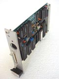
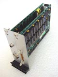
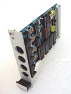
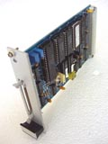

|
|
Eurocard BBC micro compatible. By Lee Davison. |
|
The CUBE is a mostly BBC micro compatible rack mount Eurocard system. It comprises a number of cards, a PSU and connectors to the outside world. It also has two 3.5" double density floppy drives.
|  |  |  |  |
 |
| CPU card | Graphics card | SIO card | FDC card | Keypad interface |
As a result of this page I was contacted with an offer of more CUBE cards, racks and, most importantly, documentation. Well I've now collected it all and as a teaser you can see some pictures here.
| Last page update: 9th July, 2003. | e-mail me
 |